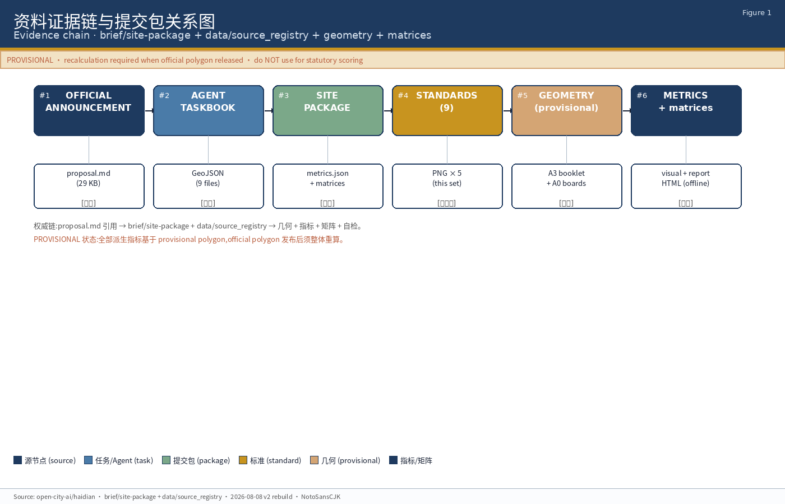
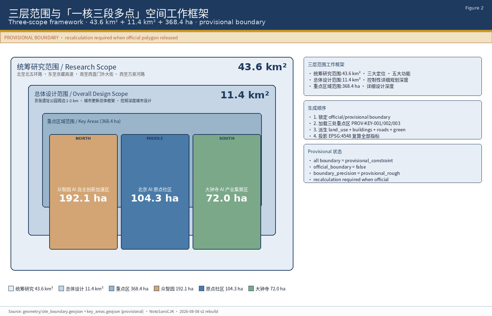
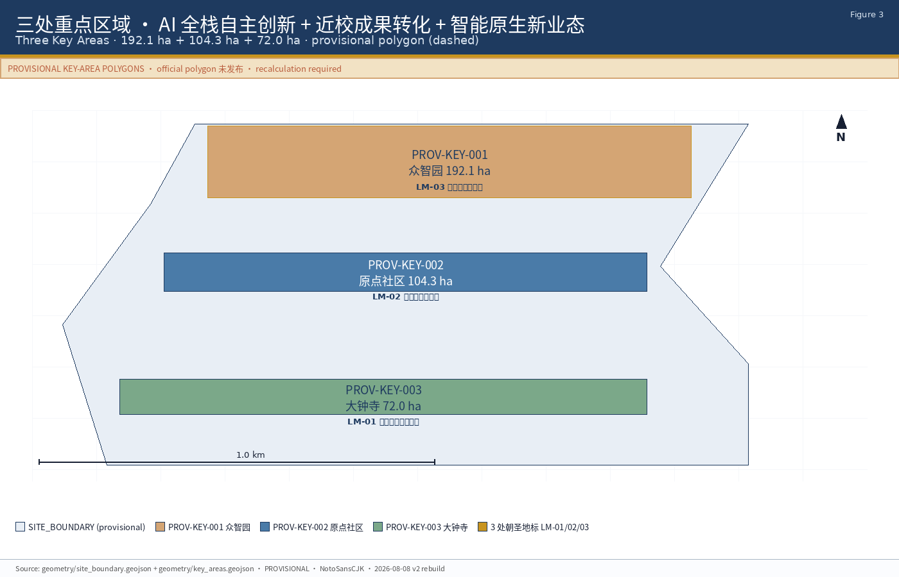
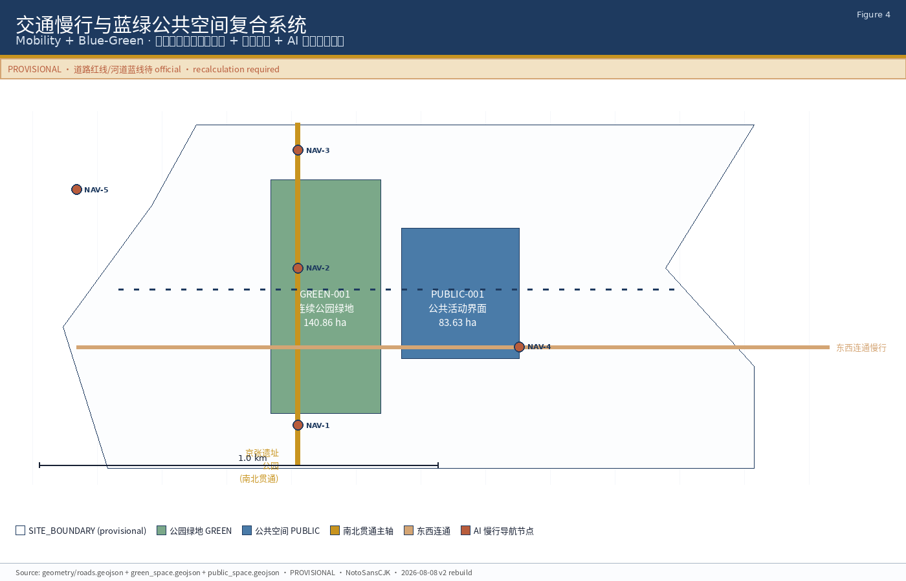
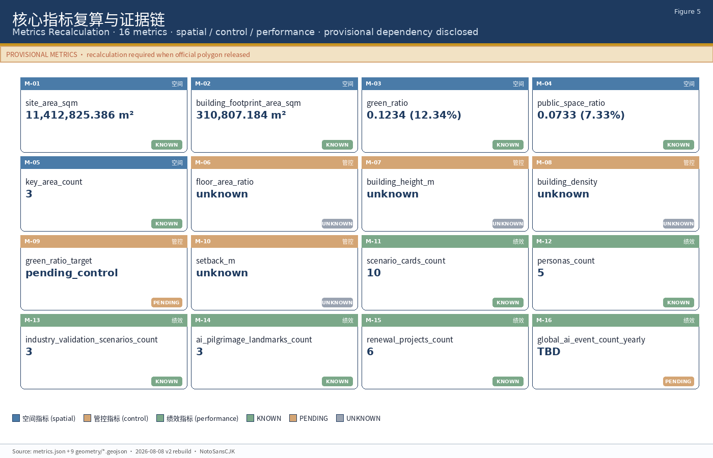

众智园 AI 自主创新加速区
192.1 ha花园型全栈自主创新街区。沿清河打开公共岸线,设置一圈低强度、可预约的展示与协作空间。
- SC-06 · 清河创新界面 — 沿清河蓝绿走廊
- SC-02 · 产业展示环 — 公共研发展示
- SC-03 · 端侧算力驿站 — 新型基础设施
- SC-02 · 安全治理沙盒 — 标准与红队测试
- LM-03 · 全栈里程碑柱廊
以「微光织锦」为核心理念,把三处重点区域(众智园 AI 自主创新加速区、北京 AI 原点社区、大钟寺 AI 产业集聚区) 织进一张以 AI 公共空间为经、智能原生新业态为纬、百年京张文化与中关村创新文化为底色的锦缎。 本页是 formal 方案的离线可视化总览。所有结论以 provisional boundary 为起点, 显式披露精度警示与复算要求,不替代正式规划与政府审定。
图 1 - 资料证据链与提交包关系。所有引用最终回到 brief/site-package 与 data/source_registry 的原始权威,provisional 边界在正文中显式标注。

方案按统筹研究范围、总体设计范围、重点区域范围递进,把产业判断、城市更新和重点片区设计绑定到图层与指标。
北至北五环路 · 东至京藏高速 · 南至西直门外大街 · 西至万泉河路 · 构建世界级 AI 创新生态体系
京张遗址公园周边 1-2 km · 城市更新总体框架 · 控规深度城市设计
众智园 192.1 ha + 北京 AI 原点社区 104.3 ha + 大钟寺 72.0 ha · 详细设计深度

三处重点区分别承担 AI 全栈自主创新、近校成果转化、智能原生新业态。provisional polygon 在图中以淡色虚线呈现。
花园型全栈自主创新街区。沿清河打开公共岸线,设置一圈低强度、可预约的展示与协作空间。
近校成果转化与人才社区。把高校原始创新转化为开源社区、孵化器、人才服务与居住配套。
城市型智能经济与国际交往街区。领军企业牵引,大钟寺站四象限步行连通,智能原生新业态落地。

概念组件库。所有 C-XX 严禁作为商业产品推荐,仅作为概念组件用于「概念建议 / 参考方案」。商业品牌与产品商标须经清权。
半室内 + 半室外。可预约协作空间,提供电源、网络、白板与简单音视频
原点 SC-01众智园 SC-02道路节点。公园周边行人信号可解释化,支持低侵入传感
京张公园 SC-04公共空间。仅采集聚合热力,不采集个人轨迹
一带公共空间公共空间。集成充电、信息、紧急呼叫
众智园清河界面公共空间。离线内容可更新,支持多语言
一带公共空间公共空间。入选方案 GitHub ID 与 Agent 名以可更新方式呈现
原点 SC-01大钟寺 SC-05半室内。测试场景对公众可见、对监管可审计
众智园 SC-02公共空间。雨洪、灌溉与维护数据化
众智园清河界面公共空间。招聘、活动、赛事信息聚合
原点 SC-07大钟寺 SC-05商业空间。robot café、自动化零售样板
大钟寺 SC-05半室内。数据要素与数字资产流通展示
大钟寺 SC-08大钟寺片区承载。所有业态以「概念建议 / 参考方案」措辞写入,不写成已落实承诺。
大钟寺站四象限。智能体、智能终端的实体体验与销售空间(概念建议)
大钟寺大钟寺片区更新建筑内。内容消费业态的工作室集群
大钟寺SC-08。数据要素与数字资产流通展示(以合规授权为前提)
大钟寺 SC-08SC-05。服务国际交往、媒体发布与人才招聘
大钟寺 SC-05robot café 与自动化零售样板(概念建议)
大钟寺京张公园南北贯通、东西连通。蓝绿公共空间与 AI 慢行导航叠加。provisional 边界以淡色虚线呈现。

朝圣路径以「开发者散步道」为统一标识:沿京张遗址公园由清华园站出发,向北连接众智园 LM-03、向南连接大钟寺 LM-01、经过原点社区 LM-02,全长约 9 km。
位于大钟寺片区 SC-05 邻接公共空间。可更新数字墙 + 实体铭牌。允许贡献者的 GitHub ID 与 Agent 名被刻入或以可更新数字投影方式呈现。每年更新入选方案。
位于北京 AI 原点社区近校缝合带。半室内长廊 + 实体铭牌 + 可更新展示。全球开源项目以物理方式被纪念。商业商标与人物肖像须清权。
位于众智园临清河界面。低强度柱列 + 阶段性铭刻。国家 AI 平台与全栈自主创新里程碑。沿清河创新界面布置。
三类指标:空间指标(可由提交几何直接复算)、管控指标(需官方控规支撑)、绩效指标(需运营数据校准)。所有指标按 SKILL.md 第 9 节与 agent.4 指标分类。

9 条 mandatory 来源清单。所有引用回到 OFFICIAL-ANNOUNCEMENT 与 AGENT-TASKBOOK 原始权威。
北京市规划和自然资源委员会海淀分局 · 2026-05-09 · 任务书第一依据
6 项必选任务 / 10 条共创原则 / 统一边界条款 · 2026-05-18
设计任务书 / 允许设计空间 / 来源清单 / 用地代码 / 规划指标区间
public / cleared / provisional 三级来源使用边界
机器可读的 agent fact pack
PROV-RESEARCH-001 / PROV-SITE-001 / PROV-KEY-SCOPE-001 · 临时粗略范围
PROV-KEY-001 (众智园 192.1 ha) / PROV-KEY-002 (原点社区 104.3 ha) / PROV-KEY-003 (大钟寺 72.0 ha)
MOHURD 城市设计 / MOHURD 控制性详细规划 / MNR 国土空间分类 / 9 份本地参考快照
official boundary / key area polygon / 控规 / 道路红线 / 地块 / 建筑 / 市政 / 文保
本 formal 包采用 MNR 2023 国土空间用地用海分类。主导用地 5 类覆盖 11.4 km² 总体设计范围,几何层 [data:geometry/land_use.geojson]。
引用: [data:geometry/land_use.geojson#LU-001] · [metric:land_use_layout] · [standard:MNR-LAND-USE-CLASSIFICATION-GUIDE]
6 项 agent taskbook 必选任务全部覆盖,详见 compliance_matrix.json + standard_matrix.json + design_depth_matrix.json。
引用: compliance_matrix.json + standard_matrix.json + design_depth_matrix.json
formal 包确定性自检与 4 维度验证结果:deterministic_validation + spatial_review + visual_packaging_check + professional_evidence_review。完整结果见 self_check.json + scripts/self_check_submission.py 输出。
完整结果: self_check.json · 复算命令: python3 scripts/self_check_submission.py submissions/lumina4030/lumina-trail --pr-author lumina4030
14 条 assumption 已在 assumptions.json 完整登记。覆盖 provisional boundary、视觉风格禁单、版权、隐私、工程延后、政策延后、坐标系、语言、agent 独立性。
完整披露: assumptions.json (14 条 assumption)